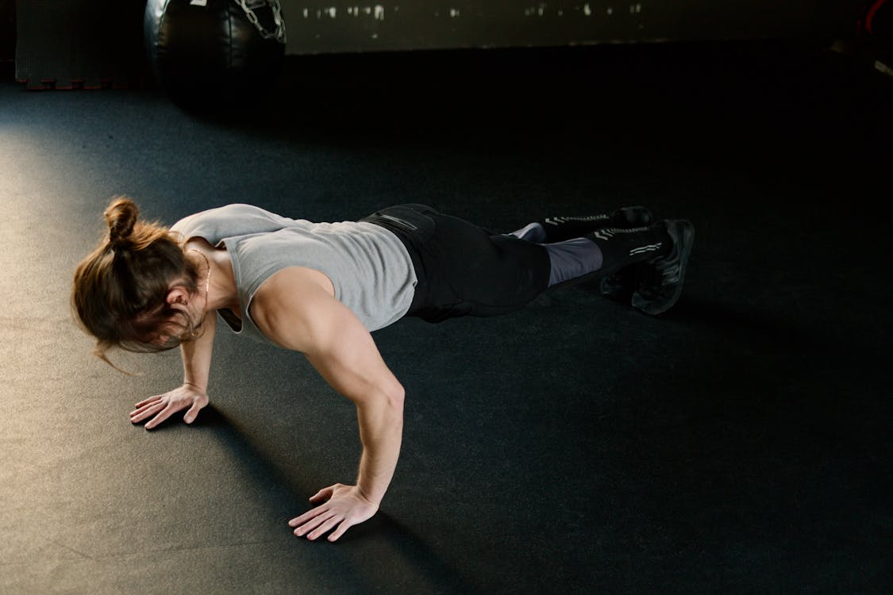

Body recomposition training Workout for Beginners
Workout Description
Body recomposition training involves simultaneously losing fat and gaining muscle to change your body composition. Here's a short workout description along with a sample workout table and conclusion
The Workouts
The body recomposition workout plan outlined here offers a balanced approach to achieving simultaneous fat loss and muscle gain. Full-body strength training sessions on Monday and Saturday target major muscle groups through compound exercises like squats, bench presses, and deadlifts, promoting overall strength and muscle development. Cardio sessions on Tuesday and Friday, whether through HIIT or steady-state cardio, enhance cardiovascular health and aid in fat burning. Wednesday's upper body strength workout focuses on strengthening the chest, back, shoulders, and arms, while Thursday's lower body strength session targets the legs, hips, and glutes for improved lower body strength and definition. A rest day on Sunday allows for essential muscle recovery, ensuring progress and preventing overtraining. Consistency with this workout regimen, coupled with proper nutrition and rest, can lead to significant improvements in body composition and overall fitness.
Body recomposition training Workout for Beginners
Workout 1 - Full Body Strength
| Exercise | Sets | Reps |
|---|---|---|
| Squats | 3 | 12,10,8,6 |
| Bench Press | 3 | 12,10,8,6 |
| Deadlifts | 3 | 12,10,8,6 |
Workout 2 - Upper Body Strength
| Exercise | Sets | Reps |
|---|---|---|
| Pull-ups | 4 | 12,10,8,6 |
| Overhead Press | 4 | 12,10,8,6 |
| Rows | 4 | 12,10,8,6 |
Workout 3 - Lower Body Strength
| Exercise | Sets | Reps |
|---|---|---|
| Lunges | 4 | 12,10,8,6 |
| Romanian Deadlifts | 4 | 12,10,8,6 |
| Leg Press | 4 | 12,10,8,6 |
Cardio
HIIT or Steady-state: Choose between high-intensity interval training or steady-state cardio for 30 minutes to improve cardiovascular health and aid in fat loss.
Cardiovascular exercise, often simply referred to as "cardio," is a cornerstone of any fitness routine. From brisk walks to intense HIIT sessions, cardio encompasses a wide range of activities designed to elevate the heart rate and improve overall cardiovascular health. Its benefits extend far beyond just burning calories; cardio plays a vital role in enhancing endurance, promoting fat loss, and reducing the risk of chronic diseases such as heart disease and diabetes.
Recovery
Any and all forms of recovery could help you maximize your potential. Massages, foam rolling, stretching, and percussive gun treatments would all serve you well. The most important one of all is sleep. If you’re not sleeping enough, you aren’t going to see the best results.
What to Do After This Program
After you max out again on the eighth week, you can either give it a second run or move on to another program based on your new goals. That is up to you. If you take this for the full run, we would love to see how you do.